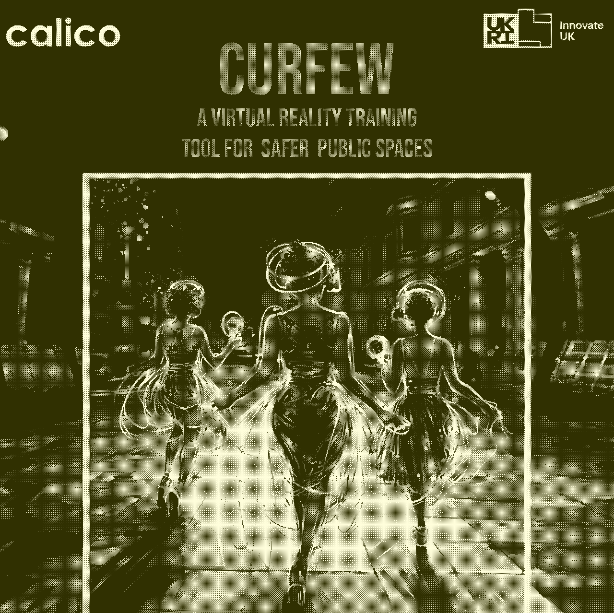
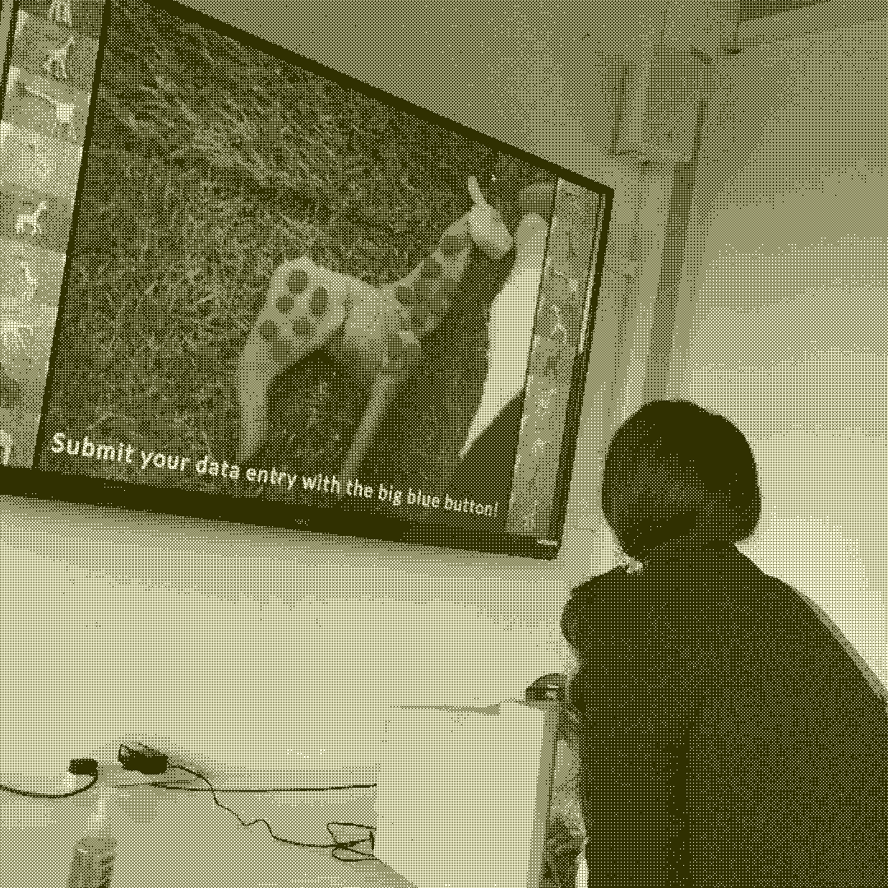
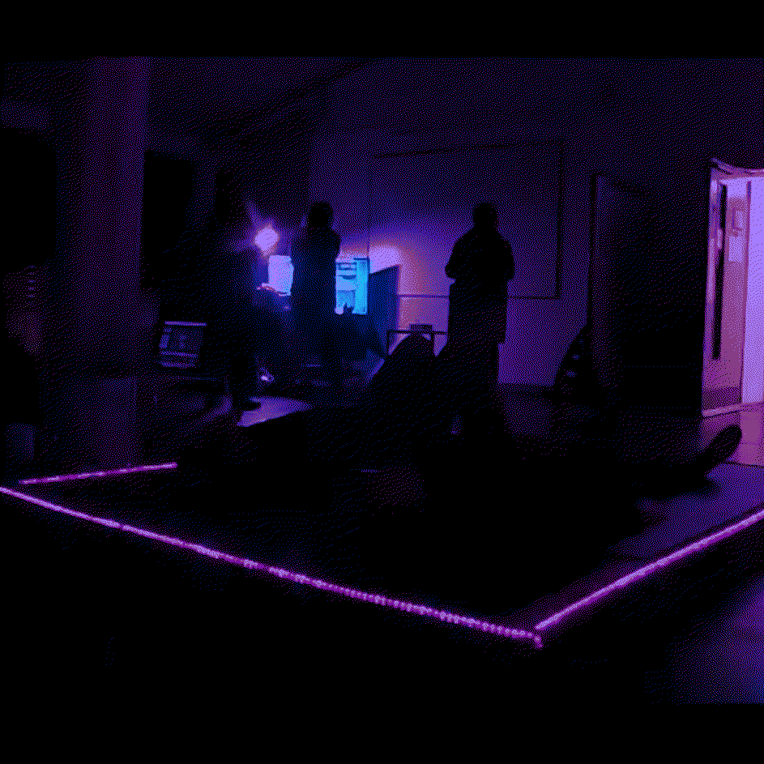
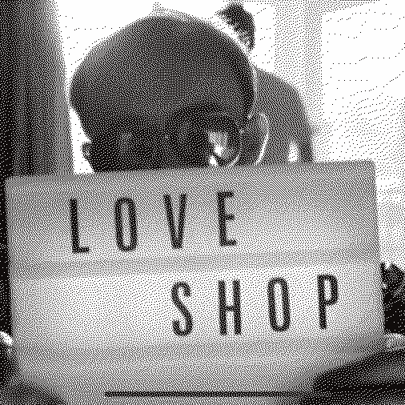

A curation of works that demonstrate my practice as a creative technologist. These works are always in touch with critical debates, especially around AI and queer bodies.
Zesty AI, AI-Powered Lemonade
This is an interactive AI installation to see how good AI is at making lemonade. We asked our audiences to engage with Zesty, our lemonade-based AI, by creating their own lemons out of arts and crafts materials and assorted non-lemon fruits and veg. Lemons scored points for not getting kicked out of the bowl by Zesty, and the highest scoring lemons were deemed lemonade worthy and juiced into the jug, whether it seemed to be a good idea or not...
CurfewVR

This is an empathy training tool that uses VR to explore the fem experience of public spaces at night. Using a mix of 360 captured video and Unity interactivity, users are taken on a journey through Birmingham at night, narrated by the verbatim voices of 16-86 year olds from the local community. The project aims to encourage victim-centered approaches to VAWG reduction, and is now implemented as training for the West Midlands Combined Authority.
See more about the project here.
See more about the project here.
Created with Calico Theatre Company
This Is Not A Giraffe

This Is Not A Giraffe is an interactive exhibit about Artificial Intelligence, dataset bias, and giraffes. We've built an AI that can recognise images of giraffes, but it needs some help to improve its data. Come along and build your own giraffe model to be tested against our machine and teach our AI about giraffes. Over the course of the day, successful giraffes will be added to the computer's dataset that can build, develop, or change its understanding of what it believes a giraffe is.
How do humans teach computers information? How can the boundaries of 'giraffeness' be shifted by other humans? Is it so different from how we teach each other and think of labels ourselves? How can we empower each other to change how we and computers understand language? Is a giraffe a definite concept?
What is a 🦒 to you ?
How do humans teach computers information? How can the boundaries of 'giraffeness' be shifted by other humans? Is it so different from how we teach each other and think of labels ourselves? How can we empower each other to change how we and computers understand language? Is a giraffe a definite concept?
What is a 🦒 to you ?
Created as part of the UWE MA Virtual and Extended Realities, with Caleb Goertel and Jordan Truemper
Intune Room

Intune Room is an immersive experience and exhibit designed to take you away from the present and give space to your mind to travel through music and its vibration. There are 3 stages to the experience: The Beginning, Tribulations and The Calm after the Storm. Each of these 3 tracks tell a story about life in themselves but combined they have a complete storyline about how struggles appear in our lives, how we process them and how we reflect on our feelings.
The idea of Intune Room was inspired by the feeling I got on my chest when I played the cello and the curiosity of how I could make that musical vibration an even bigger experience. Through this project, I got the chance to gain a lot of knowledge on how to create a ibig exhibition piece but also it allowed me to research the immersivity of musical vibration and how it can be used to engage people to have a mindful experience when life gets dark.
Watch a video of the experience here.
The idea of Intune Room was inspired by the feeling I got on my chest when I played the cello and the curiosity of how I could make that musical vibration an even bigger experience. Through this project, I got the chance to gain a lot of knowledge on how to create a ibig exhibition piece but also it allowed me to research the immersivity of musical vibration and how it can be used to engage people to have a mindful experience when life gets dark.
Watch a video of the experience here.
Created as part of the UWE MA Virtual and Extended Realities, by Elizeta Pylioti
LOVE SHOP

Heidi Gautrey
Aaron is desperately in love with his roommate Zara, but can’t find the courage to ask her out - can you help him find true love?
In this digital theatre, you run the LOVE SHOP, finessing the details of the scene to pave the way for the ideal romance. You’ll be provided with virtual tokens to spend that can change the script, change the actors, make them dance, whatever it takes for your ideal experience. Repeat the scene again and again until everything’s just right just,right just rightjust right jst///$ERROR01100011_011000010110100101101110$$?
Watch a video of the experience here.
In this digital theatre, you run the LOVE SHOP, finessing the details of the scene to pave the way for the ideal romance. You’ll be provided with virtual tokens to spend that can change the script, change the actors, make them dance, whatever it takes for your ideal experience. Repeat the scene again and again until everything’s just right just,right just rightjust right jst///$ERROR01100011_011000010110100101101110$$?
Watch a video of the experience here.
Created at Kickback Theatre Company, with Sam Joy